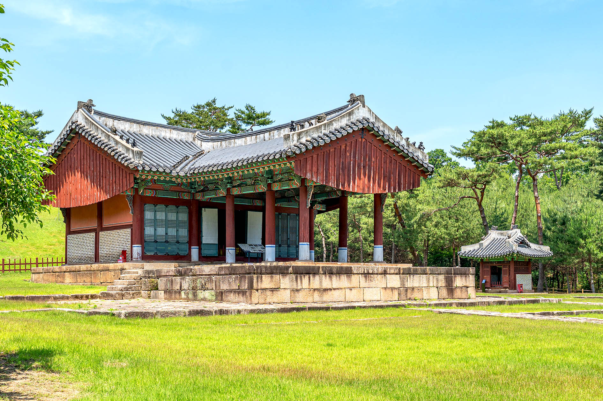

왕릉 선택
동구릉 탐방기

건원릉 입구의 장대한 숲길
제향이 이루어지는 정갈한 공간
왕릉 전경과 홍살문
추천 왕릉

선정릉
도심 한복판에 자리한 조선의 흔적

융건릉
정조의 효심이 담긴 아름다운 왕릉

태릉과 강릉
한적한 숲길과 고요한 능역이 매력적인 곳
건원릉 입구의 장대한 숲길
제향이 이루어지는 정갈한 공간
왕릉 전경과 홍살문
도심 한복판에 자리한 조선의 흔적
정조의 효심이 담긴 아름다운 왕릉
한적한 숲길과 고요한 능역이 매력적인 곳